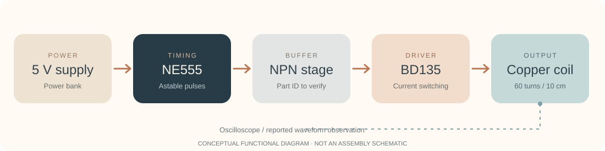
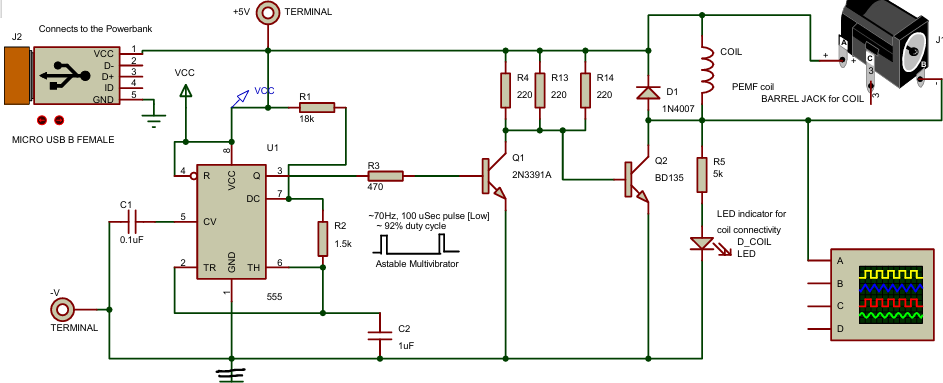
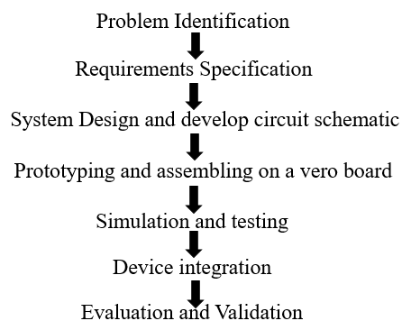
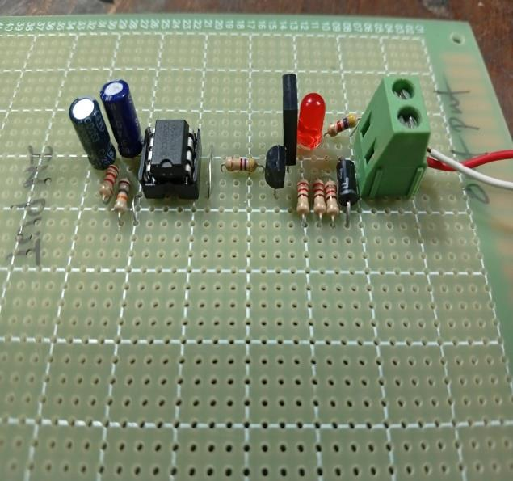
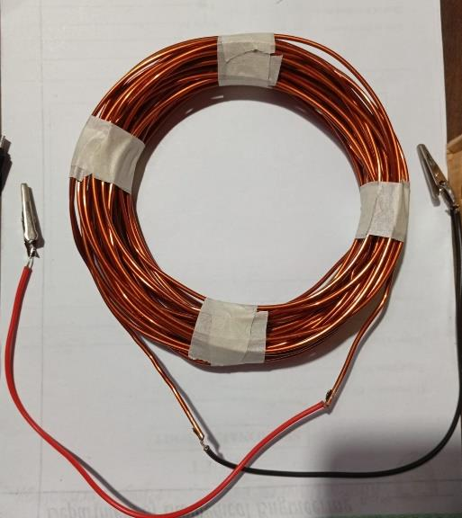
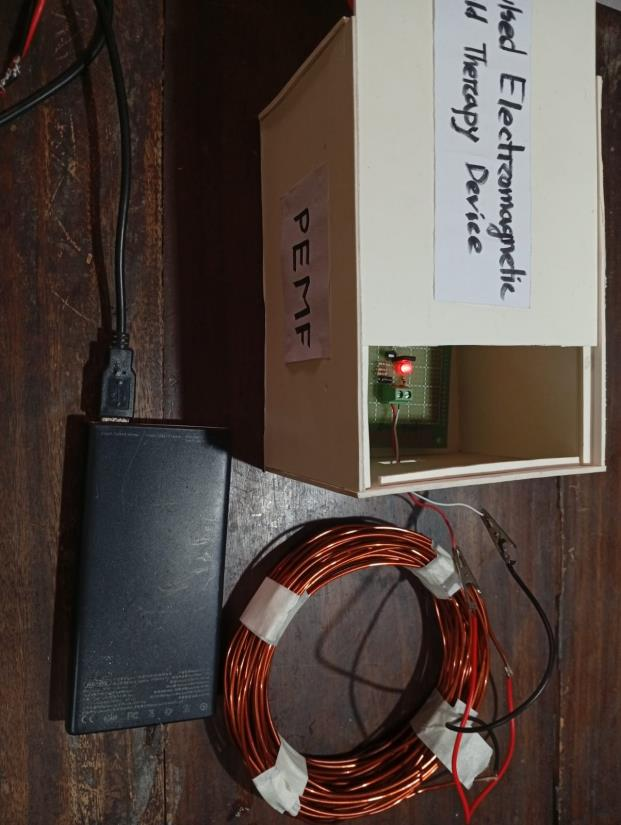
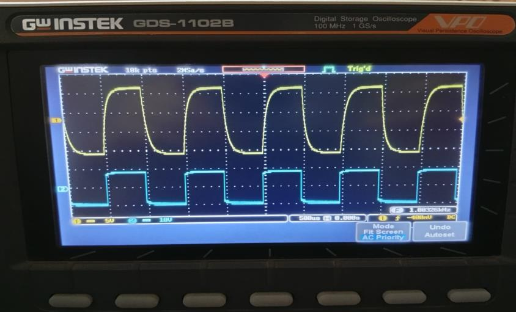
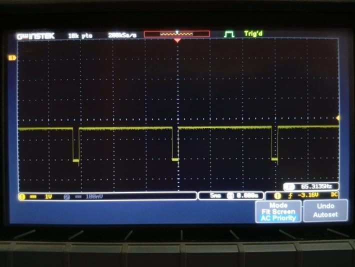
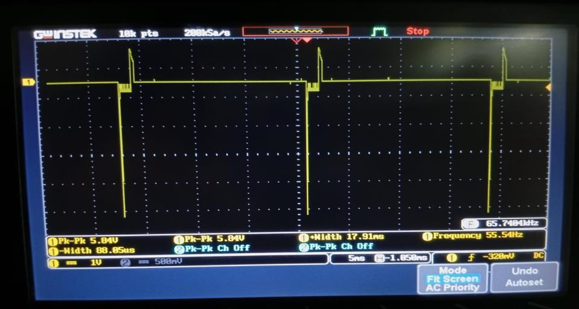

NE555 oscillator
Astable configuration produces repeated electrical pulses. Frequency and duty cycle depend on the actual resistor–capacitor network.
An electronics-focused examination of pulsed electromagnetic fields: from a 555 timer and transistor driver to a hand-wound copper coil.
The supplied May 2025 project report documents a 555-timer-based PEMF prototype built with a transistor driver and copper coil. Its emphasis is pulse formation, physical assembly and oscilloscope observations. This website interprets that technical work as a reproducible educational case study rather than a validated therapy device.
An accessible block-level interpretation of the reported signal path. The diagram is conceptual, not a fabrication-ready circuit schematic.

Astable configuration produces repeated electrical pulses. Frequency and duty cycle depend on the actual resistor–capacitor network.
A small-signal NPN stage and BD135 power transistor are described. The original report uses inconsistent labels for the first transistor.
Reported coil dimensions are 60 turns and approximately 10 cm diameter; winding geometry and real coil current affect field strength.
Values below are transcribed from the submitted report; they are not presented as fresh measurements or independently replicated results.
*The 1.44 mT value is a report calculation, not an independently verified field measurement. The reported output current is not established to equal coil current.
Source: Design and Implementation of a Pulsed Electromagnetic Field (PEMF) Trainer Board for Therapeutic Application, KUET course report, May 2025, pp. 9–15. Submitted author in the report: Sadia Islam. The title reflects the source document; this site does not claim an established therapeutic indication.
An interactive, idealized mathematical visualization for teaching. The controls do not communicate with hardware and the drawing is not recorded experimental data.
Approximation: B = μ₀NI/(2r), a circular coil in free space at its center. The model assumes the slider current flows through all turns; it does not account for magnetic cores, real current pulses, heating, field spatial distribution or tissue exposure.
The circuit, prototype and oscilloscope images below come directly from the supplied May 2025 project report. The figures are original report evidence, not generated illustrations or newly performed experiments. Select an image to enlarge it.

555 timer, switching transistors, BD135 driver and coil

Design, simulation, assembly and validation workflow

Original assembled circuit photograph

Original winding photograph

Enclosure and connected copper coil

Original oscilloscope photograph

555 timer waveform

Original output waveform
The reported 1.44 mT magnetic field was a calculation, not an independently verified measurement. These figures do not demonstrate clinical efficacy or human-use safety.